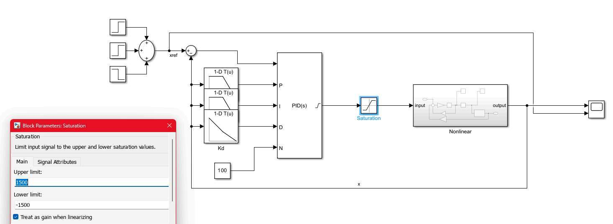
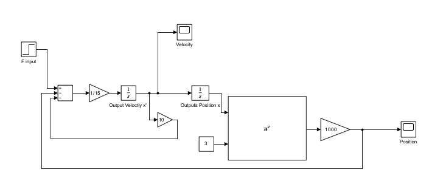
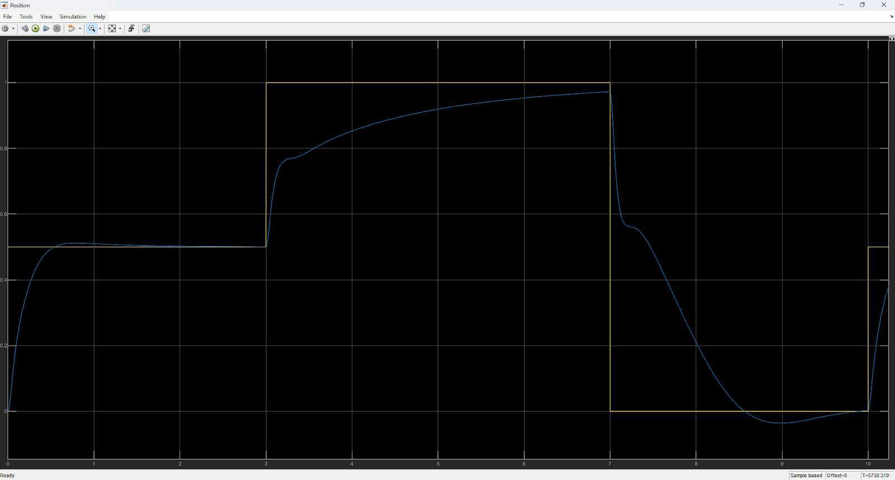
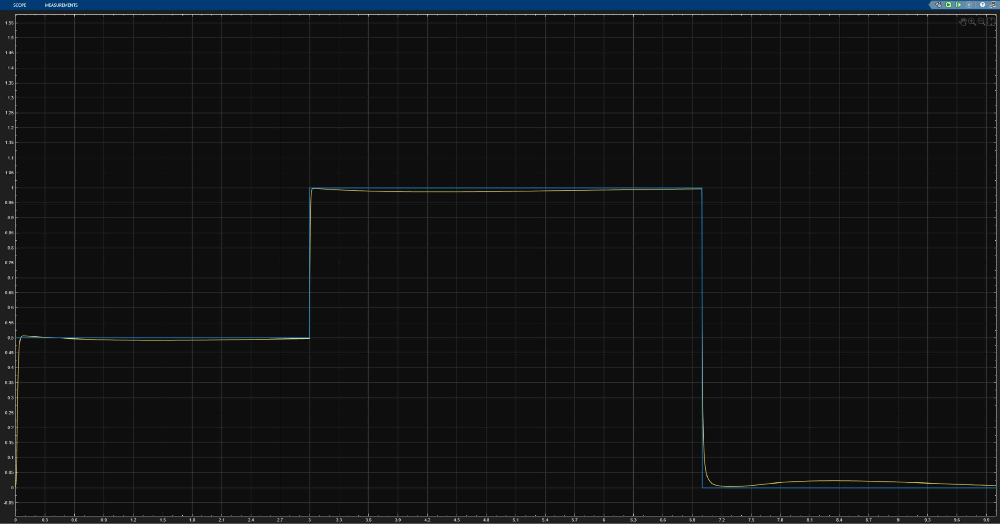
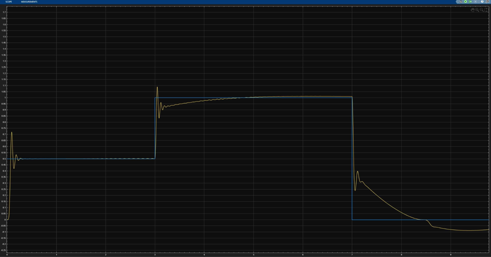

Controls · MATLAB/Simulink · Summer 2025
Gain-Scheduled Door Position Control
An MSE 381 team project with Ahmed Al-Gattan and Jessica Gong — modeling a spring-loaded automatic door's nonlinear dynamics and designing PID controllers, fixed and gain-scheduled, to track a reference position under realistic actuator limits.

Overview
The brief was a spring-loaded automatic sliding door designed to close on its own if power is lost — which means its spring can't be linear. As the door nears fully open or fully closed, the spring force ramps up sharply, giving a cubic restoring force F = kx³ instead of the usual F = kx. Combined with viscous damping and an actuator force input, the full equation of motion is mx'' + cx' + kx³ = F. We built that nonlinear system in Simulink from first principles — sum blocks, gain blocks, a pair of integrators, and a math-function block to generate the x³ term — then linearized it around three operating points (x₀ = 0, 0.5, 1 m) using a first-order Taylor expansion, and confirmed the linearized model tracked the true nonlinear response closely near each operating point, with the gap widening the further the door moved from that point.
From there we designed a conventional fixed-gain PID controller, first without constraints (which could track the reference almost perfectly but only with unrealistically aggressive gains), then retuned within actual gain limits (0 < Kp ≤ 800, 0 < Ki ≤ 1800, 0 < Kd ≤ 250) representative of what a real actuator could support — still landing within 2% steady-state error inside a 3-second settling window. A single fixed-gain controller is a compromise, though: it can't be equally aggressive everywhere the nonlinear spring behaves differently. So we replaced it with a gain-scheduled PID — three lookup tables mapping error to Kp, Ki, and Kd across operating regions — which cut steady-state error at the midpoint down to 0.624% while staying inside the same gain caps. Finally, we added a ±1500 N saturation block to model the actuator's real force limit, which introduced integral windup and overshoot right after the signal left saturation — a real trade-off between how tightly the controller can chase the reference and what the actuator can physically deliver.
Design & Build
From Nonlinear Model to Gain-Scheduled Control
Four stages: model and linearize the door, tune a constrained fixed-gain PID, move to gain scheduling, then test both against a real actuator limit.

Nonlinear Modeling & Linearization
The door's equation of motion, mx'' + cx' + kx³ = F, was built directly in Simulink: a sum block for the net force, integrators to get from acceleration to velocity to position, and a math-function block to generate the cubic spring term from the position feedback. To make the system usable for PID design, we linearized it via a first-order Taylor expansion of the x³ term around three operating points, giving a transfer function of the form 1/(15s² + 10s + 3kx₀²) for each. Comparing the linearized and true nonlinear open-loop responses confirmed the approximation held up well near each operating point, with the nonlinear spring effect — and the gap between linear and nonlinear behavior — growing stronger the further the door moved from x₀.

Fixed-Gain PID Within Real Limits
An unconstrained PID (Kp = 5000, Ki = 5450, Kd = 1250) tracked the reference signal closely but required unrealistically large gains and left the system oscillating more than we wanted. Real actuators don't support arbitrary gains, so we retuned within the constraints given for this project (Kp ≤ 800, Ki ≤ 1800, Kd ≤ 250), landing on Kp = 800, Ki = 1800, Kd = 250 through trial and error. That controller still avoided overshoot, settled within the required 3 seconds, and held steady-state error to within about 1.2–2% across the operating range — proof a fixed-gain controller can work, just as a compromise across the door's full range of motion rather than being tuned to any one part of it.

Switching to Gain-Scheduled Control
To do better than a single compromise gain set, we split the PID into three lookup tables (1-D LUT blocks) mapping the error signal to region-specific Kp, Ki, and Kd values feeding a single PID block — letting the controller behave differently depending on where the door actually was, without ever exceeding the same gain limits from the fixed-gain design. The improvement was immediate: at the x₀ = 0.5 m reference, the gain-scheduled controller settled at 0.49688 m — a 0.624% error, down from the fixed-gain baseline — while keeping overshoot minimal and staying within the 3-second settling requirement across all three reference steps.

Testing Against a Real Actuator Limit
To check the design against real-world feasibility, we added a Simulink saturation block clamping the controller's output to ±1500 N, using the same gain-scheduled controller with no retuning. The effect was immediate and instructive: whenever the commanded force hit the limit, the loop effectively lost gain, the error couldn't be driven down as fast, and the integral term wound up — producing visible overshoot and ringing right after the signal came back out of saturation, both on the 0.5 → 1 m step and the 1 → 0 m step. The system stayed stable and still converged, but the exercise showed exactly where a real design would need anti-windup logic, a set-point filter, or a rate limit to clean up that post-saturation transient.
Full Write-Up
Final Report
The full MSE 381 report — modeling, linearization, both controller designs, and the saturation analysis.